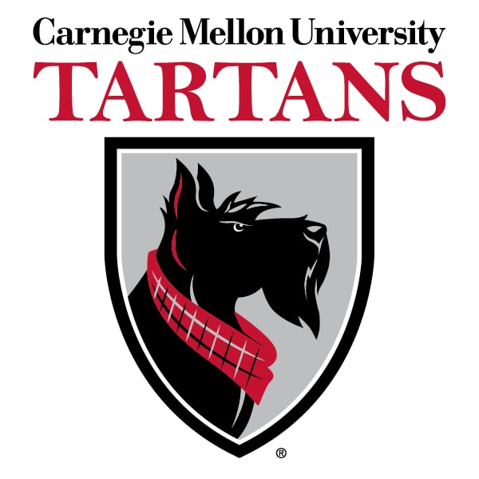

Hello, I'm
Yuxuan Yang

Graduate Student
Carnegie Mellon University
Pursuing MS in Automated Science at School of Computer Science. Specializing in computational biology and automated scientific discovery.
MSAS @ CMU
2024 - 2026
Pittsburgh, PA
United States